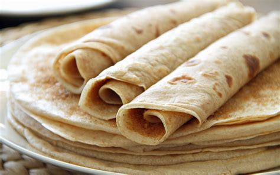

Palacsinta

Description
Palacsinte are flat round cakes, similar to pancakes, but thinner and made with a different dough. They are similar to the French crêpes, though Palacsinte are slightly thicker.
Ingredients
- 250 ml milk
- 150 g wheat flour
- 3 eggs
- 1 pinch of salt
- Mineral Water (optional, makes the dough more fluffy)
Steps
- Mix the flour with the milk, eggs and the salt, continuously stirring.If desired, thin the batter with a bit of mineral water.
- Heat the pan well. Add a drop of oil and spread it around.
- Ladle a dipperful of the batter into the pan, tilting the pan so that the batter spreads as evenly as possible over the whole pan.
- Let cook about 45 seconds to 1 minute until the top of the palacsinta is dry.
- Flip the pancake over, and allow it to brown for about 30 seconds on the other side. Remove from the pan, and set aside.
- Repeat the cooking process until you have used up all the batter.